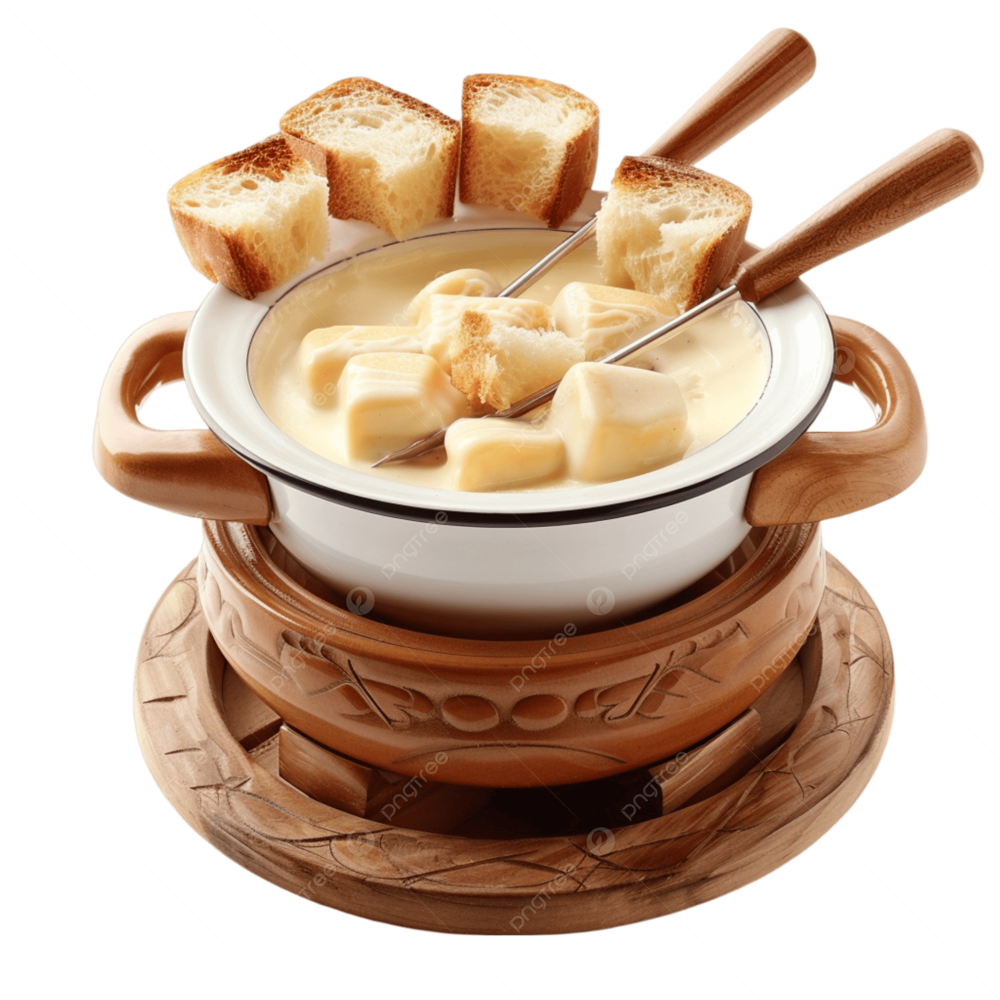

Summary & Origins
Sumblnacht, often celebrated in the heart of winter, traces its origins
back to ancient traditions of reflection, community, and the welcoming
of longer days after the winter solstice. The holiday stems from Austria,
specifically the Tyrolean Alps, where families and neighbors would gather
to share warmth, stories, and the joys of the season, honoring the beauty
of snow-covered landscapes and the magic of winter nights.
Over the centuries, Sumblnacht evolved into a festive occasion marked by
lights, seasonal foods, and cozy gatherings, blending local folklore with
modern celebrations. Today, it remains a reminder of hope, togetherness,
and the quiet magic of winter.
As you explore this website, may the spirit of Sumblnacht inspire warmth,
joy, and a touch of winter wonder in your own celebrations!
How to Celebrate Sumblnacht
The heart of Sumblnacht celebrations is gathering with friends and family
to enjoy a large feast, often featuring traditional German fondue. During
the meal, families participate in a unique ritual using the family book:
Boasts: Each person shares something they accomplished or are proud of from the past year.
Roasts: Family members playfully roast each other, noting down embarrassing moments.
Oaths: Everyone writes down personal goals for the upcoming year.
This tradition reinforces reflection, humor, accountability, and
togetherness, making Sumblnacht a meaningful and memorable celebration.

